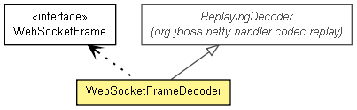

org.jboss.netty.handler.codec.http.websocket
类 WebSocketFrameDecoder
java.lang.Object
 org.jboss.netty.channel.SimpleChannelUpstreamHandler
org.jboss.netty.handler.codec.replay.ReplayingDecoder<VoidEnum>
org.jboss.netty.handler.codec.http.websocket.WebSocketFrameDecoder
org.jboss.netty.channel.SimpleChannelUpstreamHandler
org.jboss.netty.handler.codec.replay.ReplayingDecoder<VoidEnum>
org.jboss.netty.handler.codec.http.websocket.WebSocketFrameDecoder
- 所有已实现的接口：
- ChannelHandler, ChannelUpstreamHandler
public class WebSocketFrameDecoder
- extends ReplayingDecoder<VoidEnum>

Decodes ChannelBuffers into WebSocketFrames.
For the detailed instruction on adding add Web Socket support to your HTTP
server, take a look into the WebSocketServer example located in the
org.jboss.netty.example.http.websocket package.
| 从类 java.lang.Object 继承的方法 |
equals, getClass, hashCode, notify, notifyAll, toString, wait, wait, wait |
DEFAULT_MAX_FRAME_SIZE
public static final int DEFAULT_MAX_FRAME_SIZE
- 另请参见：
- 常量字段值
WebSocketFrameDecoder
public WebSocketFrameDecoder()
WebSocketFrameDecoder
public WebSocketFrameDecoder(int maxFrameSize)
- Creates a new instance of
WebSocketFrameDecoder with the specified maxFrameSize. If the client
sends a frame size larger than maxFrameSize, the channel will be closed.
- 参数：
maxFrameSize - the maximum frame size to decode